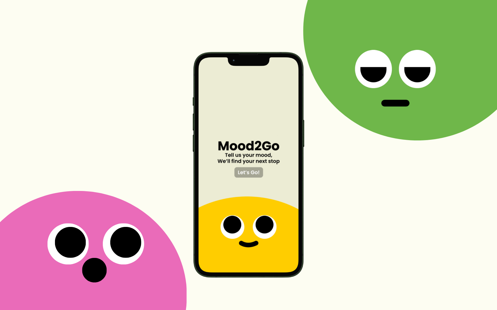

Case study • Mobile app • Google Maps Hackathon
MOOD2GO
A mobile app that helps people decide where to go based on mood, vibe, and distance. Submitted to the Google Maps Platform Hackathon (AI + Travel), exploring how playful design and API integration can turn everyday indecision into mood-matched adventures.
← Back to works
01
Overview
02
Background
Mood2Go was born from a familiar dilemma: you want to go out, but have no idea where to go. Plans stall, ideas run dry, and you end up visiting the same places again and again.
We saw this as an opportunity to transform indecision into discovery. By combining mood, vibe, and distance, Mood2Go creates personalized recommendations that feel right in the moment—not just logically correct.
03
Understanding the problem
Through casual observation of 10 outings with friends, we noticed recurring frustrations:
- Indecision dominates planning — most groups spent 15–20 minutes debating where to go.
- Repetitive destinations — 7 out of 10 groups ended up in the same familiar spots.
- Time wasted — in some outings, plans were delayed or even cancelled because agreement wasn’t reached.
- Relief when suggestions came quickly — whenever someone proposed a fitting idea fast, the whole group followed.
04
Who we designed for
We identified two key user types who represent different decision-making behaviors:
Lina, 20
“I just want somewhere that feels cozy but not always the same place, please.”
Loves discovering new spots but gets overwhelmed by too many options. She decides by vibe, not logic— and needs an emotional, visual way to explore.
Darren, 22
“We’ve been talking for 20 minutes and still haven’t picked a place!”
Loves hanging out but hates endless group debates that always end up at the same familiar spots just to avoid arguments. He needs a quick, guided way to choose places everyone can agree on.
05
Design principles
From research to requirements—these guided every decision:
Mood → vibe → radius → 3 recommendations → select → guide. No endless scrolling.
Recommendations that fit the chosen criteria and are within reach.
Discovery by vibe and mood—not fixed categories or rankings.
Makes discovery simple, visual, and enjoyable—not another utility app.
06
User flow
A guided path from indecision to “let’s go”:
recommendations
07
Iterations
Design is never one-and-done. Here’s a key iteration that shaped the experience:
The mood input used numbers (1–4), but users found it abstract and confusing. They struggled to differentiate the emotions.


Replaced numbers with swipe interactions and clear emotion labels—short descriptions and emotion titles made choices feel intuitive.


08
Visual design
Each color in the palette maps to a mood or moment in the flow—so the interface itself communicates feeling:
Typography: Poppins — friendly, modern, and legible at every step of the flow.


09
Design decisions
How insights translated into concrete UX choices:
Users choose by vibe, not logic → We centered the flow around “mood” and “vibe,” not categories or rankings.
Numbered mood inputs felt abstract → Swipe interactions with clear emotion labels and short descriptions.
Keep momentum → A simple, quick flow: inputs → 3 recommendations → select → guide. No dead ends.
Darren needs speed; Lina needs feeling → Fast path for groups, emotional/visual language for solo explorers.
10
Results & takeaways
After two months of daily calls and late-night debugging, Mood2Go was born from our very first hackathon as a team of mostly beginners. I grew beyond my role as a designer—picking up skills as a product manager and backend contributor: setting deadlines, coordinating meetings, recruiting user testers, and learning new APIs, transitions, and workflows.
We delivered a working prototype with coded features, API integration, and a polished UI—about 75% of our design vision implemented and demoed in the final video pitch.
- End-to-end execution — proved we could design, code, and ship under tight constraints.
- Cross-disciplinary learning — stretched into both design and technical problem-solving.
- The power of simplicity — a straightforward UX turned indecision into excitement during testing.
11
Future directions
This is just the start. If developed further, Mood2Go could expand through:
- Group mode — collaborative decision-making with friends.
- Favorites — save and revisit go-to spots.
- Memory-based recommendations — refrain from suggesting recently visited places.
- Expanded categories — more moods, more nuanced vibes, and richer recommendations.